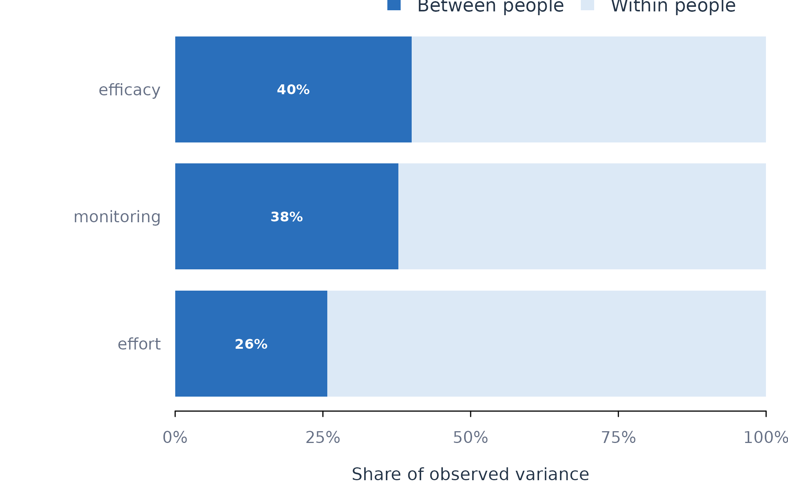

Within- and Between-Person Variance with variance_components()
Source:vignettes/variance-components.Rmd
variance-components.RmdAnalytic question
variance_components() quantifies whether variation
occurs mainly between people or within a person over time. The function
takes a repeated-measures data frame, one or more variables, and a
person identifier. It returns the within-person variance, between-person
variance, total variance, intraclass correlation, and reliability of the
person mean.
variance_components() defines the intraclass correlation
as the share of total variance attributable to stable differences
between people. A variable with an intraclass correlation near zero
varies mainly within people. A variable with an intraclass correlation
near one differs mainly between people.
Decompose the observed variance
variance_components() uses the analysis-of-variance
estimator by default. The optional REML estimator requires
lme4. Table 1 reports the default decomposition for three
self-regulated-learning variables.
components <- variance_components(analysis_data, vars = c("efficacy", "monitoring", "effort"), id = "name")
components
#> VARIANCE COMPONENTS
#> Grouping name
#> Method anova
#>
#> Within Between ICC Reliability
#> --------------------------------------------------------
#> efficacy 435.4422 290.6398 0.400 0.990
#> monitoring 516.7891 313.4551 0.378 0.990
#> effort 560.3849 194.4532 0.258 0.982
#>
#> ICC share of variance lying BETWEEN groups
#> Reliability precision of each group's own meanvariance_components() assigns intraclass correlations of
approximately 0.40 to efficacy, 0.38 to monitoring, and 0.26 to effort
in Table 1. Most observed variation therefore occurs within learners for
all three variables. Stable between-learner differences remain large
enough to make a raw pooled slope potentially mix levels of
association.
Plot the variance shares
plot_variance() converts each intraclass correlation
into complementary between-person and within-person shares. Figure 1
uses blue for between-person variance and orange for within-person
variance.
plot_variance(components)
Figure 1. Within-person and between-person shares of observed variance.
Figure 1 shows that the within-person share exceeds the between-person share for each variable. Effort has the largest within-person share among the three. This pattern supports models of daily fluctuation while retaining a separate term for stable person means.
Assumptions and failure checks
variance_components() assumes that person identifiers
define independent clusters. The default decomposition uses observed
group means and pooled within-group variation. The reliability column
depends on both the intraclass correlation and the number of
observations per person. High reliability of a person mean does not
imply high within-person reliability of individual occasions.
variance_components() requires variation across people
to estimate a between-person component. A variable that is constant
within each person can support a between-person comparison but cannot
support a person-specific time-varying slope. A variable with no
between-person variation cannot identify a contextual contrast.
When to use which
variance_components() is appropriate before choosing a
level of analysis. describe_persons() is appropriate for
person-specific data quality and temporal movement.
fit_within_between() is appropriate when the variance
decomposition motivates separate within-person and between-person
coefficients. pool_coefs() is appropriate after estimating
individual slopes and addresses heterogeneity of effects rather than
heterogeneity of variable levels.